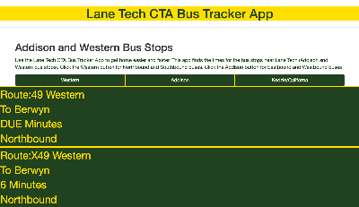

Lane Tech CTA Bus Tracker
This page uses the CTA Bus Tracking API. It retrieves data from the data base for routes 152 Addison, 49 Western, and X49 Western Express.

Find CPS Schools App
Find CPS Schools App allows the user to enter a zip code and type of school. After that, points are placed on a map. When you click on a marker, it gives information about the school and a link to the website.

Find My Car!
With the Find My Car App, the user types in their license plate number. The city of Chicago data is looped and returns results.

Canvas Webpage
This page was experiemnting with the canvas element on HTML. Using the mouse, you can paint on the page.

Air Horn App
This simple app is my first step at making moble apps. This stores the data locally so that it can be used offline. When the button is pressed, you hear an annoying air horn sound.

JS Fiddle App
JS Fiddle helps users do less coding. In my web development class, we decided to make our own version of it. I didn't work on this project alone. Instead, it was as class. However, it still was something I enjoyed working on.